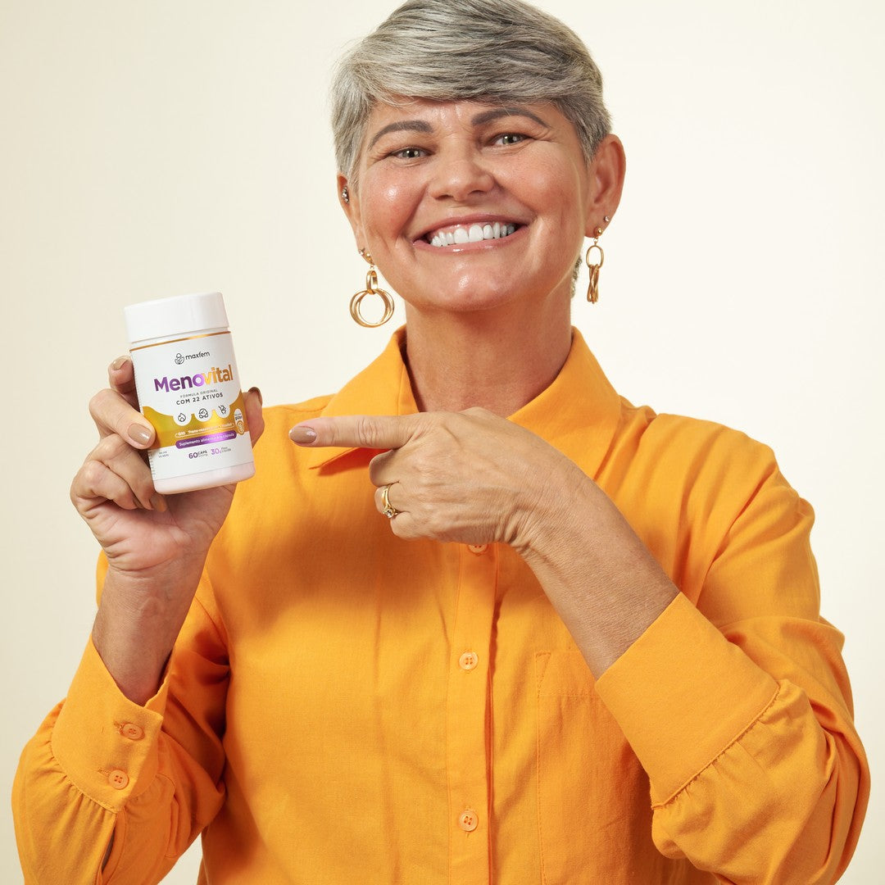

MAXFEM · SAÚDE, BELEZA E VOCÊ
Sua melhor fase merece protagonismo.
Uma parceria de longo prazo para a mulher 40+.
MENOVITAL EM PRIMEIRO PLANO12 MESES +

Imagem do catálogo MaxfemMAXFEM · SAÚDE, BELEZA E VOCÊ
Uma parceria de longo prazo para a mulher 40+.

Imagem do catálogo Maxfem